4. Schalter / Pegelwandlung
Dieses Kapitel behandelt folgende Themen:
- BJT (Schalter)
- MOS-FETs (Schalter)
- Pegelwandler
- CMOS-Inverter
Der maximale Strom eine IO-Pins des ATmega16 ist gemäß Datenblatt 40 mA.
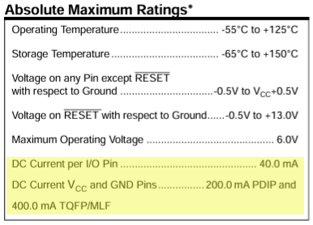
Um einen zuverlässigen Betrieb zu gewährleisten macht es in der Praxis Sinn, den maximalen Strom deutlich zu senken. Empfohlen werden max. 20mA.
Werden nun Verbraucher mit deutlich höheren Strömen durch den Mikrocontroller geschaltet (z.B. Lampen, Relais oder Motoren), ist eine zusätzliche Schaltung notwendig. Im folgenden betrachten wir zwei Möglichkeiten - die Verwendung von bipolaren Transistoren sowie von Feldeffekt-Transistoren als Schalter.
4.1 BJT als Schalter
4.1.1 Allgemeines
Ein Transistor eignet sich zum kontaktlosen Schalten kleiner und mittlerer Leisungen. Meist geschieht dies mit einem bipolaren Transistor vom Typ NPN (Emitterschaltung).
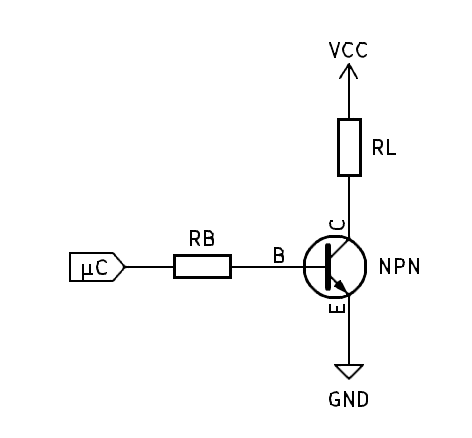
Im folgenden wird ein typisches Ausgangskennlinienfeld eines npn-Transistors dargestellt:
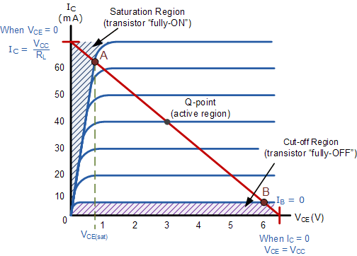
Mögliche Betriebsmodi eines Transistors sind:
Sperrbereich (Cutoff Region)
Betrieb als Schalter (OFF, geöffnet). Der Basisstrom IB ist 0, es fließt kein Kollektorstrom, die VCE entspricht VCC. Der Transistor arbeitet als offener Schalter.
Aktiver Bereich (Linear/Active Region)
Werden mit einem Transistor analoge Wechselsignale verstärkt, wird dieser im linearen Bereich der Ausgangskennlinie betrieben. Dabei ist der Kollektorstrom proportional zum Basisstrom, analoge Signale werden mit minimaler Verzerrung verstärkt.
Sättigungsbereich (Saturation Region)
Betrieb als Schalter (ON, geschlossen). Es liegt ein ausreichend großer Basistrom (IB) an, um den Transistor vollständig einzuschalten. Es fließt der maximale Kollektorstrom (Ic ~ Vcc/RL), die Kollektor-Emitter-Spannung ist minimal.
Anmerkung: Der Transistor ist genaugenommen nie ganz sperrend oder ganz leitend, vielmehr kann der Widerstand der CE-Strecke sehr hochomig oder sehr niederohmig sein.
4.1.2 Dimensionierung
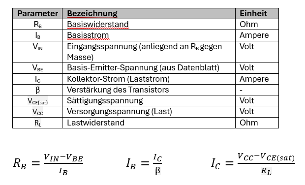
Zu beachten ist weiters die maximal zulässige Kollektor-Emitter-Spannung sowie Ptot (total power) und ggfs. Schaltzeiten.
Beispiel 4.1
Ein Transistor, angesteuert von einem ATmega16 (5V) soll eine Last schalten, welche 200 mA Strom benötigt. Was ist der Wert des Basiswiderstand (VBE = 0.7V, BETA=200) im gesättigten Zustand?
4.1.3 Arbeitspunktverschiebung Besonderheiten unterschiedlicher Lasten
Arbeitspunktverschiebung
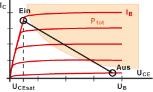
Beim Schalten zwischen "EIN" und "AUS" durquert der Arbeitspunkt den verbotenen Bereich Ptot (maximale Leistung, die der Transistor sicher durch Wärme ableiten kann, ohne beschädigt zu werden - Überschreiten führt zu Überhitzung und möglicherweise zur Zerstörung des Transistors). Eine kurze Überschreitung ist unkritisch.
Schalten ohmscher Last (z.B. Widerstand)
Ohmsche Lasten sind unkritisch zu Schalten.
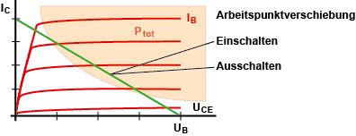
Schalten einer kapazitiven Last (z.B. Kondensator)
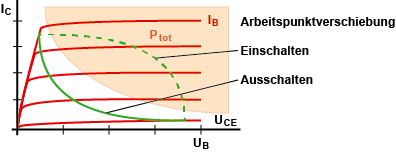
Eine kapazitive Last zieht beim Einschalten einen hohen Strom, der begrenzt werden muss.
Schalten einer induktiven Last (z.B. Spule, Relais oder Motor)
Beim Ausschalten einer induktiven Last wird eine Spannung induziert. Diese kann den Transistor zerstören.
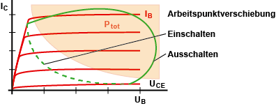
Eine Freilaufdiode schützt den Transistor, indem sie einen Pfad zu VCC bildet.
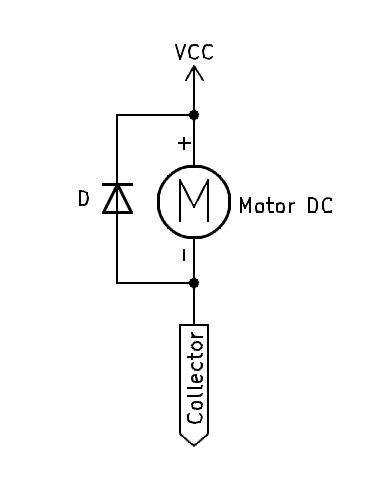
4.1.5 Darlington-Transistorschalter
Beispiel 4.2
Eine 3A-Last soll mit einem BD139 geschaltet werden. Die minimale Verstärkung beträgt 40. Was ist der IB? Kann IB von einem IO-Pin des ATmega16 geliefert werden?
Wie verhält es sich mit einem TIP120? Was ist der RB?
Darlington-Transistoren sind Kombinationen aus zwei Bipolartransistoren. Sie weisen eine sehr hohe Stromverstärkung, sind also ideal geeignet in Anwendungsfällen wo hohe Ströme geschaltet werden müssen und nur ein geringer Steuerstrom zur Verfügung steht. Hauptmerkmale sind die hohe Verstärkung (= gewünscht) und die relative hohe Sättigungsspannung (= unerwünscht).
4.2 FETs
4.2.1 Allgemeines
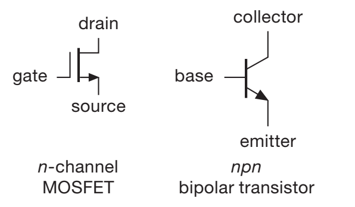
Im Vergleich zum bipolaren Transistor haben Feldeffekt-Transistoren den großen Vorteil, dass das Gate keinen Strom zieht (sehr hohe Eigangsimpendanz). Die Steuerung erfolgt mit Spannung, nicht mit Strom.
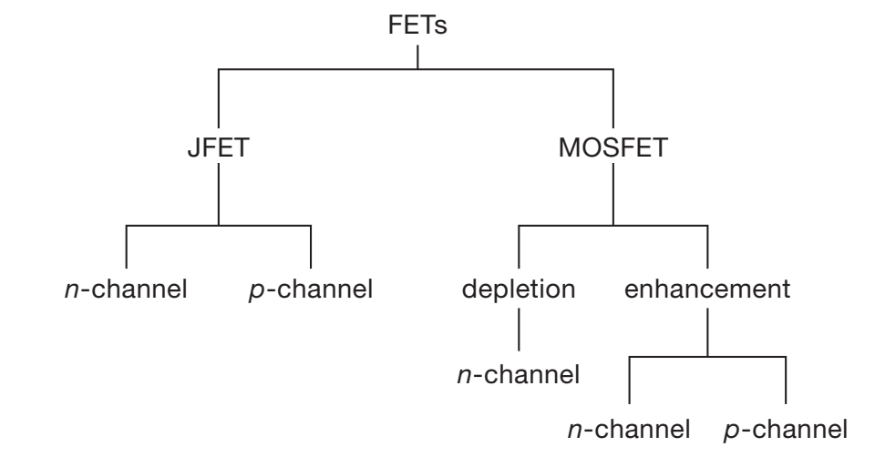
Unterschieden werden:
- JFET = engl. Junction Field Effect Transistor, Übergangszonen FET, der steuerbare Kanal wird durch einen PN-Übergang wie in einer Diode gebildet
- MOSFET = engl. Metall Oxide Semiconductor Field Effect Transistor; Metalloxidschicht-FET, größte Teilgruppe der FETs mit isoliertem Gate
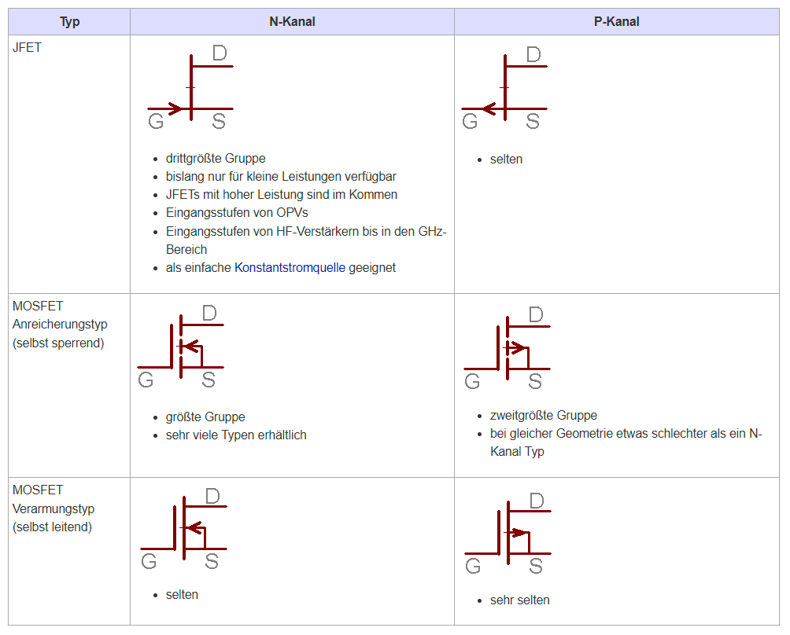
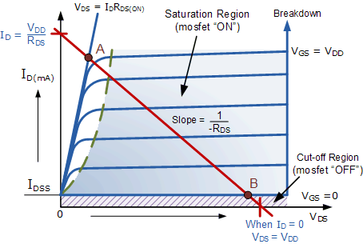
4.2.2 Anwendungsfälle (FET als Schalter)
- Digitalelektronik
- Multiplexer
- Schaltwandler
- On/Off Batterie
- Veränderbare Filter
- Sample-and-hold Schaltung
- Digitale Potentiometer
- H-Brücke
Zur Schaltung von DC-Elektromotoren (vorwärts/rückwärts) - kann diskret aufgebaut werden oder mit dedizierten ICs.
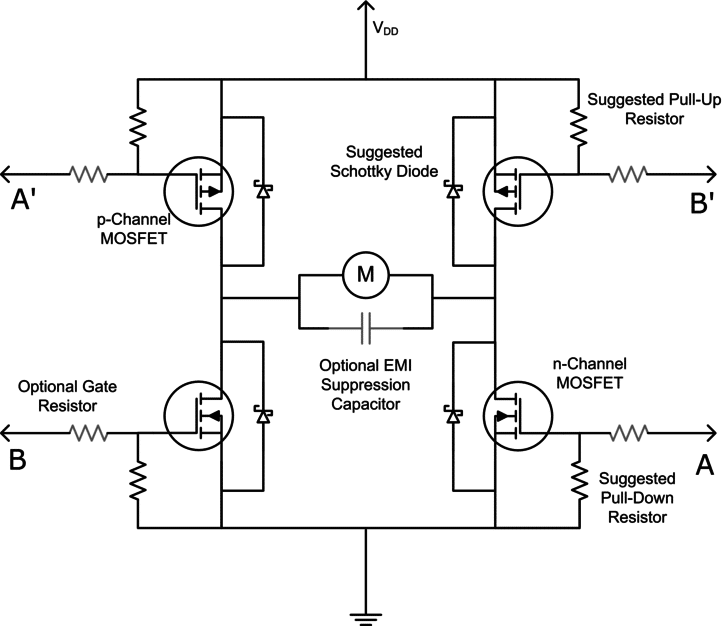
4.2.3 Auswahl eines N-Kanal-MOSFET für Logikpegel
Folgende Parameter sind bei der initialen Auswahl eines N-Knal-MOSFET für Logikpegel zu berücksichtigen:
Drain-Strom ID
Der maximale Dauerstrom (oder ggfs. der maximale Pulsstrom) ist abhängig von der zu schaltenden Last
Gate-Source-Schwellenspannung Vgs(th)(min) und Vgs(th)(max)
Die Gate-Source Schwellspannung (Gate-Source Threshold Voltage) gibt an, ab welcher Spannung der MOSFET anfängt, minimal leitfähig zu werden. Technologisch bedingt ist diese Spannung einer starken Toleranz unterworfen (typische Spreizung von 1:2 zwischen Miminum und Maximum). Un den gewünschten Rds(on) zu erreichen, muss die Vgs ggfs. höher sein (siehe Datenblatt).
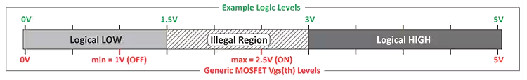
Drain-Source-Durchlasswiderstand - Rds(on)
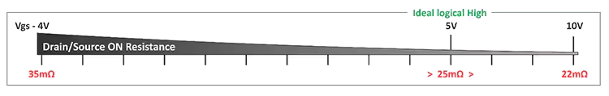
Eingangskapazität - Ciss
Die Eingangskapazität sollte möglichst gering sein, insbesondere bei hohen Schaltfrequenzen.
Beispiel 4.3
Suchen Sie auf digikey.at einen MOSFET über die Parametersuche, welche von einem ATmega16 angesteuert werden kann und eine Last von 3A schalten kann.
Was ist Rds(on) des MOSFET? Was ist die Gate-Source-Schwellenspannung (Bereich)? Was ist die Eingangskapazität Ciss?
Beispiel 4.4
LTSpice Simulation mit dem MOSFET Si7336ADP
Beispiel 4.5
Simulieren Sie in LTSpice selbstständig folgende Aufgaben zum BSP89:
Als Basis für die Aufgabe dient diese Schaltung:
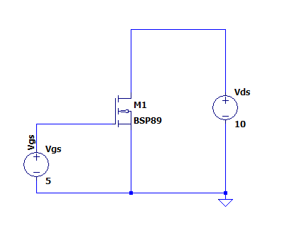
-
Aufgabe 1: DC sweep von Vgs von 0-20V. Bei welcher Schwellspannung beginnt der MOSFET zu schalten? Was ist der Gate-Strom?
-
Aufgabe 2: Wieviel ist der Verlauf der Leistung bei Aufgabe 1? (Hinweis: ALT + linke Maustaste)
-
Aufgabe 3: Bestimmen von Rds(on) im voll durchgeschalteten Betrieb. Wieviel Ohm sind es? Passt der Wert zum Datenblatt? (Hinweis: Rds(on)=Vds/Id
-
Aufgabe 4: Zeichnen des Kennlinienfelds des MOSFET (Hinweis: Sweep Vds von 0-240V, Vgs von 0-20V in 4V Schritten). Warum wurden diese Werte gewählt? Wo befindet sich der lineare Bereich? Wo der Sättigungsbereich? Wo der Sperrbereich?
-
Aufgabe 5: MOSFET Steuerspannung (Vgs) gepulst (100Hz). Wieviel Strom zieht das Gate aufgrund der^ Eingangskapazität Ciss beim Schalten? Kann ein ATmega16 diesen Strom liefern?
-
Aufgabe 6: Linear-Betrieb (Verstärker) - tbd
4.2.4 Anschluss an einen Mikrocontroller
Sowohl JFETs als auch MOSFETs haben eine Eingangskapazität (Gate-Kapazität). Diese ist insbesondere beim MOSFET größer und resultiert aus der Oxidschicht zwischen dem Gate und dem Kanal. Die hier auftretenden Einschaltströme können den IO-Pin eines Mikrocontrollers überlasten - dies kann mit der folgenden Schaltung vermieden werden:
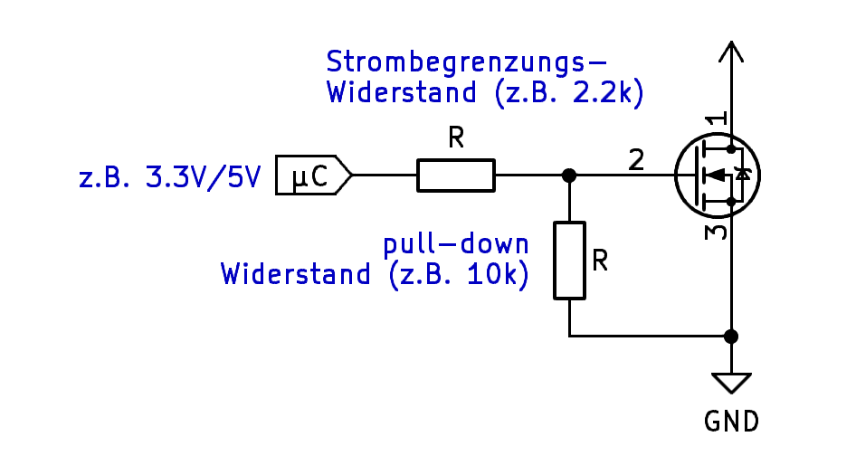
Der Pull-down Widerstand sorgt dabei für einen definierten Pegel während des Starts und Resets des Mikrocontrollers.
Anzumerken ist, dass der MOSFET für Logic Level (LL) ausgelegt ist, der schon bei einer Gatespannung von etwa 4.5V voll durchgesteuert sind. Die meisten FET werden mit ca. 10-15V angesteuert, wofür wiederum eine eigene Treiberschaltung notwendig ist.
4.3 CMOS-Inverter
Wird noch ergänzt.
4.3 Pegelwandler
"Als Pegelumsetzer oder Pegelwandler (englisch level shifter) bezeichnet man in der Elektronik eine diskrete oder integrierte elektronische Schaltung, welche die Signalpegel – in der Regel Spannungssignale – einer Informationsquelle an die Eingangssignalpegel einer Informationssenke anpasst. Pegelumsetzer können sowohl in der Analogtechnik als auch in der Digitaltechnik angewendet werden." (Wikipedia)
Es gibt verschiedenen Möglichkeiten, einen Pegelwandler umzusetzen. Einiger dieser Methoden sind im folgenden beschrieben:
4.3.1 Spannungsteiler
Eine einfache und günstige Methode ist ein simpler Spannungsteiler.
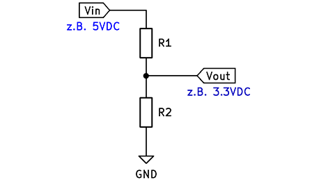
Dabei berechnet sich die Spannung aus:
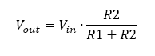
Bei Verwendung von Widerständen aus der E24-Reihe kann z.B. aus 5V mit einem R1 = 1.8kΩ und R2 = 3.3kΩ eine Ausgangsspannung von 3.3V erzeugt werden.
Vorteile
- Einfach (geeignet für Prototyping)
- Günstig
Nachteile
- Unidirektional
- Nur von höherer zu niedriger Spannung
- Ungeeignet für hohe Frequenzen
4.3.2 Diode
Ähnlich einfach ist die Verwendung einer Diode in Verbindung mit einem Widerstand (kann z.B. bei einem Mikrocontroller der interne Pull-up Widerstand am Eingang sein).
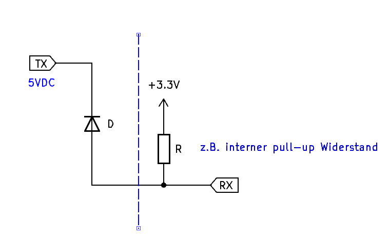
Liegen an TX 5V an, sperrt die Diode und an RX liegt die Spannung über den Pull-up Widerstand an (3V). Ist TX bei 0V, leitet die Diode und an RX liegt 0V + If an (If = Durchlassspannung).
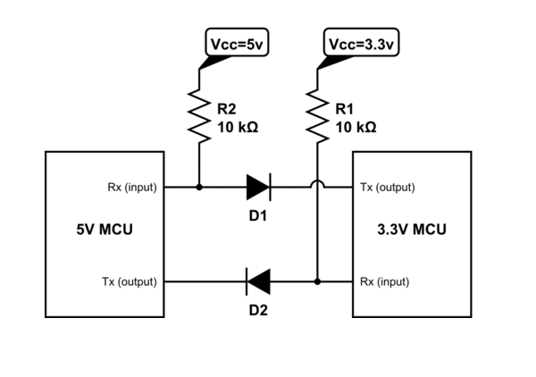
Vorteile
- Einfach (geeignet für Prototyping)
- Günstig
Nachteile
- Unidirektional
- Nur von höherer zu niedriger Spannung
- Ungeeignet für hohe Frequenzen
4.3.3 MOSFET (N-Kanal)
Mit einem MOSFET ist eine bidirektionale Anpassung des Spannungspegel möglich.
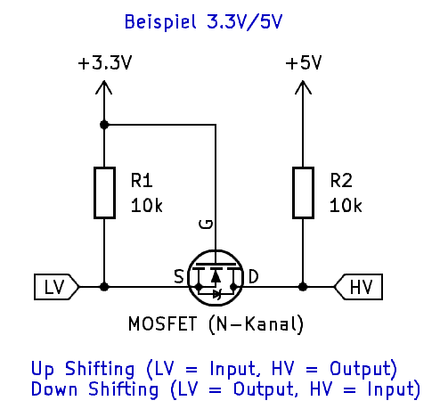
Die genaue Funktion ist hier erklärt.
Vorteile
- Bidirektional
- Zuverlässig und schnell
Nachteile
- Komplexer
- Setzt eine geeignete Auswahl des MOSFET voraus
4.3.4 Logic Level Converters
Es gibt eine Vielzahl an dedizierten Schaltkreisen genau für diesen Zweck.
Beispiel TXB0108 (8-Bit, bidirektional)
Vorteile
- Bidirektional
- Zuverlässig und schnell
Nachteile
- Teurer
4.3.5 Optokoppler
Optokoppler isolieren zwei Schaltkreise elektrisch voneinander, indem er elektrische Signale mittels Licht überträgt. Dies geschieht z.B. durch Verwendung einer LED und eines lichtempfindlichen Bauteils (z.B. Fotodiode).
Vorteile
- Elektrische Isolation
- Zuverlässig
Nachteile
- Langsamer